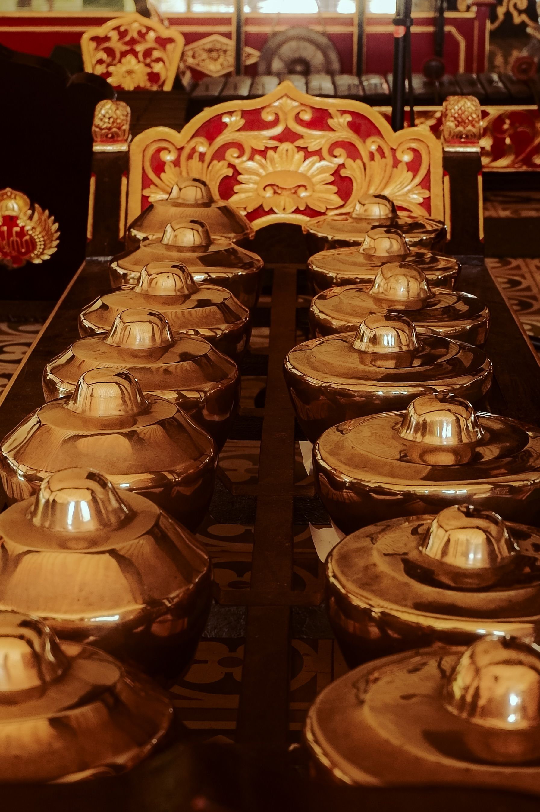

“Trompong, Keindahan Bunyi Gamelan Bali”
Alat musik ini dimainkan dengan cara dipukul menggunakan dua alat pemukul khusus untuk menghasilkan rangkaian nada yang indah. Trompong merupakan bagian dari gamelan Bali yang berperan dalam menciptakan melodi dan mengiringi berbagai pertunjukan seni tradisional.